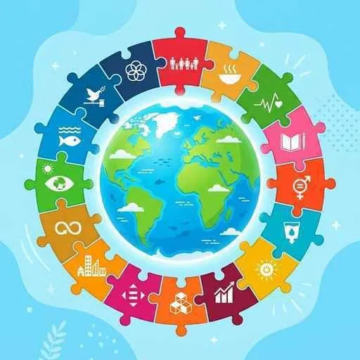

16. 地球規模の課題とこれからの人類
現代の国際社会は、一つの国だけで解決することが不可能な、地球規模の大きな問題に直面しています。環境破壊、資源の枯渇、世界的な貧富の格差、そして戦争やテロの脅威など、これらは私たちの未来の生活に直結する課題です。最終章となる今回は、地球規模の環境・経済・平和の課題を整理し、持続可能な未来（SDGs）について考えていきます！
1. 人類共通の危機「地球環境問題」と資源問題
国境に関係なく地球全体に被害をもたらす公害や環境破壊を地球環境問題と呼びます。
① 地球温暖化（ちきゅうおんだんか）
石炭や石油などの化石燃料の大量消費によって、二酸化炭素（温室効果ガス）の濃度が高まり、地球全体の気温が上昇する現象です。海面上昇による陸地の水没や、異常気象を引き起こしています。
- パリ協定（2015年採択）：
温室効果ガス削減のため、先進国・途上国を含むすべての国が削減目標を掲げて取り組む新しい国際的枠組みです。
② 資源・エネルギー問題
限りある化石燃料への依存から脱却するため、二酸化炭素を出さず、自然の力で繰り返し利用できる再生可能エネルギー（太陽光・風力・地熱・バイオマスなど）への転換（クリーンエネルギーシフト）が世界中で急速に進められています。
2. 世界の格差：「南北問題」と「南南問題」
国際社会における経済発展の格差も、深刻な地球的課題です。
◆ 南北問題（なんぼくもんだい）
北半球に多い豊かな先進工業国と、南半球に多い開発途上国（元植民地が多い）との間に横たわる、深刻な経済格差の問題です。
◆ 南南問題（なんなんもんだい）─ひっかけ注意！
開発途上国（南）の内部で、資源を持ち急速に経済成長を遂げた「新興工業国（BRICSなど）」と、資源がなく開発が極めて遅れている「後発開発途上国（LDC）」との間に生じている、新たな経済格差の問題です。
- 政府開発援助（ODA）：先進国の政府が途上国に対して行う、資金や技術の支援活動。
- フェアトレード（公正取引）：途上国で作られた作物を適正な価格で買い続けることで、現地の自立を支援する貿易。
3. 平和への努力と持続可能な開発目標（SDGs）
① 国際紛争と核兵器問題
民族や宗教の対立による紛争やテロが絶えない中、大量破壊兵器である核兵器をめぐる議論も活発です。核兵器の拡散を防ぐ核拡散防止条約（NPT）に加え、2021年には核兵器の開発や保有、使用などを全面的に禁止する核兵器禁止条約が発効しました（※ただし、核保有国やアメリカの核の傘に頼る日本などは署名していません）。
② 持続可能な開発目標（SDGs・エスディージーズ）
将来の世代が使える資源や環境を保護しつつ、現在の社会を発展させていく社会を「持続可能な社会」と呼びます。
国連合意のもと、2030年までに世界全体で達成すべき17の具体的な目標を掲げたものがSDGsです。貧困や飢餓の撲滅、環境保全、ジェンダー平等、気候変動への対策など、多様な地球的課題を網羅し、世界中で官民一体となった取り組みが行われています。

図1：地球の豊かな自然を守りながら、すべての人々が豊かに暮らせる持続可能な社会のイメージ
🔥 この単元のテスト対策・暗記のコツ
-
★
南北問題と南南問題の明確な区別（超頻出！）：
・記述・選択問題でのポイント：「先進国と開発途上国の格差 ＝ 南北問題」「開発途上国内における、急成長国と開発が遅れている国の格差 ＝ 南南問題」。どちらも名前が似ていますが、格差が生じている主体が異なります。 -
★
政府が行う途上国援助の略称：
・政府開発援助はアルファベットで「ODA」と略されます。NGOやPKOと混ざらないように注意してください。 -
★
SDGsの基本知識：
・「持続可能な開発目標」であること。目標の数は全部で「17」であること。目標達成の期限は「2030年」であること。この3つの数字や基本情報は記号や穴埋め問題で狙われます！